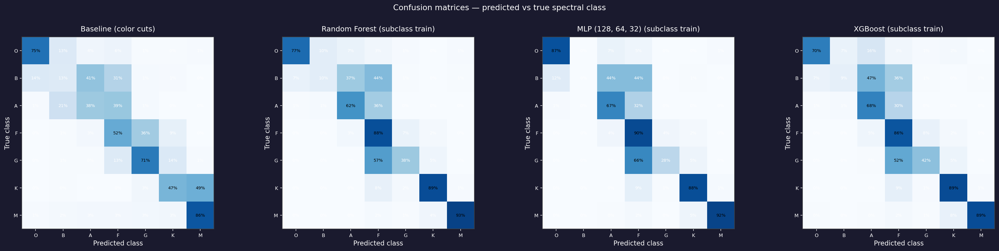
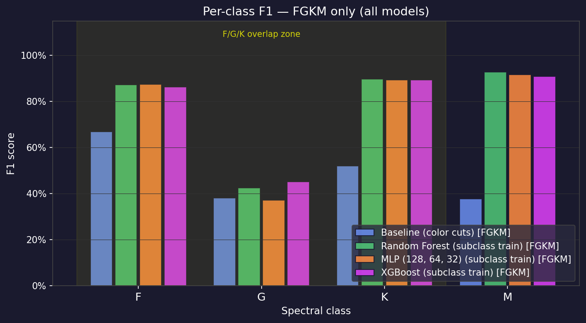
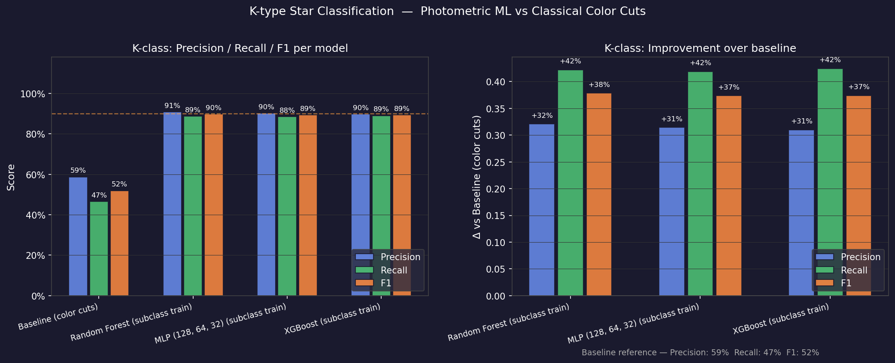
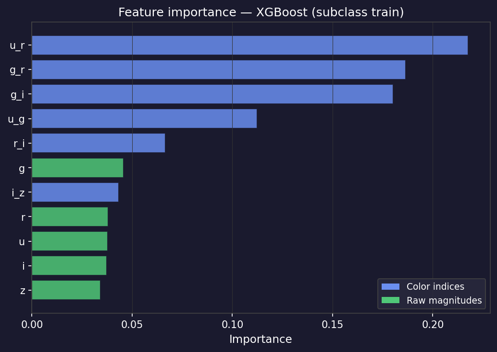
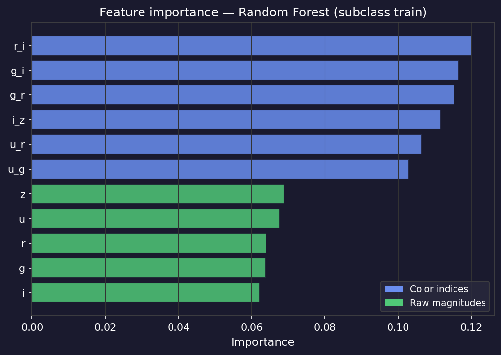
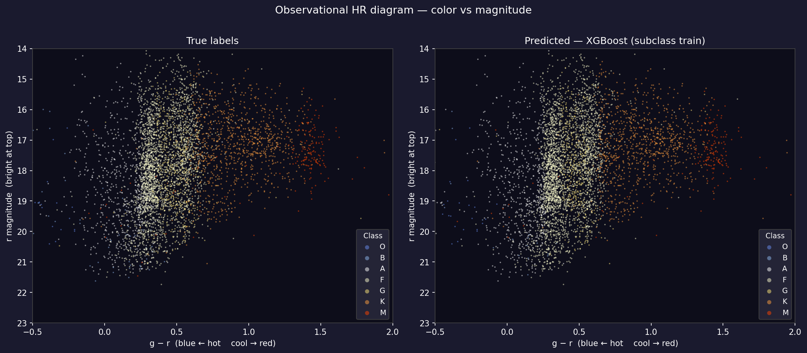

Stellar Spectral Classification from SDSS Broadband Photometry using Machine Learning
Department of Computer & Mathematical Sciences, University of Toronto
SDSS DR17 · 93,628 spectroscopically-labelled stars · Random Forest · XGBoost · MLP
Code & pipeline: github.com/Ma-Saoo/stellar-classification
The Harvard spectral sequence, ordered by surface temperature: O (>30,000 K, blue) through M (<3,700 K, red). The Sun is a G-type star.
Abstract
Spectroscopy is the gold standard for classifying stars by temperature, but it is slow and expensive: each star must be observed individually and its light dispersed into a full spectrum. Broadband photometry, which measures brightness through a handful of filters, is orders of magnitude cheaper and already exists for billions of objects. We ask whether machine learning can recover a star's spectral class from photometry alone. Using 93,628 spectroscopically-labelled stars from SDSS DR17, we engineer eleven color and magnitude features and train three classifiers (Random Forest, XGBoost, and a multilayer perceptron) against a classical color-cut baseline. Our central finding is that ML lifts K-type recall from 46% to 91% and K-type F1 from 51% to 90%. This result has real operational value for exoplanet host-star surveys. At the same time, we show that the persistent F/G confusion near 6,000 K is an irreducible physical limit of broadband photometry rather than a modelling failure, cleanly separating what ML can fix from what only a spectrograph can resolve.
1Introduction
Stellar classification is one of the oldest organizing tasks in astronomy. The Harvard spectral sequence (O, B, A, F, G, K, M) orders stars by surface temperature, from blistering blue O-type stars hotter than 30,000 K down to cool red M-dwarfs below 3,700 K. Our own Sun is a middle-of-the-sequence G-type star. Assigning a star to its class is the foundational step for almost everything downstream: estimating its mass, age, and luminosity; selecting targets for exoplanet searches; and mapping the structure and populations of the galaxy.
1.1 Why spectroscopy is expensive
Historically, classifying a star meant taking its spectrum: dispersing its light into a rainbow and reading the absorption lines that fingerprint each temperature regime. This is precise but costly. A spectrograph collects light from one object at a time, or a few hundred with fiber systems. It requires long exposures to gather enough photons for faint stars, and demands substantial competitive telescope time. Spectroscopy simply does not scale to the billions of stars catalogued by modern imaging surveys.
1.2 Why photometry is cheap, and tempting
Photometry is the opposite. A wide-field camera images a large patch of sky at once; a filter in front of the detector passes one slice of the spectrum, and the brightness of every star in the field is recorded simultaneously. SDSS images in five bands (u g r i z, spanning 354 to 913 nm), capturing millions of objects per night. The difference between two bands, a color index such as g−r, tracks where a star's blackbody curve peaks and therefore serves as a direct temperature proxy: hot stars are blue (small g−r), cool stars are red (large g−r).
The opportunity is clear. A model that maps five cheap brightness measurements to a spectral class could be applied to the billions of stars in current and next-generation imaging surveys such as LSST/Rubin and Euclid, where spectroscopy will never be available. Crucially, SDSS also obtained spectra for a large subset of its imaged stars, providing ground-truth labels to train and validate a photometric classifier against.
1.3 Contributions
This work investigates three questions: (i) Can ML models trained on SDSS color indices outperform classical color-cut classifiers across the full OBAFGKM sequence? (ii) Where does photometric classification fundamentally break down, and why? (iii) For which spectral class does ML provide the most operationally useful improvement? Our central thesis is that ML on photometric colors yields genuine, operationally useful gains for some classes, dramatically so for K-type stars, while the F/G boundary near 6,000 K remains fundamentally unresolvable without spectroscopy. The interesting result lies in cleanly separating the two regimes.
2Methods
2.1 Data acquisition
I pulled the data from SDSS using a database query that matches each star's image measurements to its spectrum, keeping only objects confidently classified as stars. To make sure the brightness measurements were trustworthy, I dropped stars that were too bright or too faint, anything with large measurement errors, and duplicate observations. After cleaning, the sample contains 93,628 stars.
Table 1. Class distribution of the cleaned SDSS stellar sample. The heavy skew toward F/G/K reflects the true population of a magnitude-limited survey, not a sampling artifact; it is handled in training rather than erased.
| Class | Count | Share | Character |
|---|---|---|---|
| O | 463 | 0.5% | hot, blue, rare |
| B | 834 | 0.9% | hot, blue |
| A | 13,099 | 14.0% | white |
| F | 48,667 | 52.0% | dominant class |
| G | 9,320 | 10.0% | Sun-like |
| K | 17,527 | 18.7% | exoplanet hosts |
| M | 3,718 | 4.0% | cool red dwarfs |
| Total | 93,628 | 100% |
2.2 Feature engineering
Eleven features were constructed from the five SDSS magnitudes. The six color indices (u−g, g−r, r−i, i−z, u−r, g−i) are distance-independent: they depend only on the shape of the spectral energy distribution, which temperature sets. The five raw magnitudes (u, g, r, i, z) carry additional luminosity and distance information but introduce scatter. Both sets are supplied so the models can learn their relative usefulness rather than having it imposed a priori.
2.3 Training strategy
- Granular subclass training. Models are trained on subtypes (
G2,K1) rather than coarse letters, preserving the continuous temperature gradient, so the model learns that G0 sits closer to F9 than to G9. Predictions are coarsened to letters (G2→G) only afterward, for evaluation, never before training. - Rare-class filtering. Subtypes with fewer than 20 examples are dropped before fitting; they are too sparse for meaningful learning and break stratified cross-validation.
- Honest imbalance handling. Rather than fabricating stars with SMOTE, which would violate true astrophysical class frequencies, we use
class_weight='balanced'and cost-sensitive boosting, penalizing rare O/B misclassifications more heavily without inventing data. - Splits. 70 / 10 / 20 train / validation / test, stratified by subtype. Validation is reserved solely for post-hoc threshold tuning; the test set is held out entirely until final evaluation.
2.4 Models
- Baseline (classical color cuts). Fixed threshold rules on
g−randu−g, mirroring pre-ML practice. It requires no training and is fully interpretable, setting the bar every ML model must clear. - Random Forest. 300 trees, balanced class weights, all eleven features; 5-fold cross-validated. Handles mixed feature importance natively and needs no scaling.
- XGBoost. Gradient-boosted trees (300 rounds, depth 6, learning rate 0.1). Labels are integer-encoded after rare-class filtering, which is necessary because XGBoost requires gap-free class indices.
- MLP. A fully-connected network with hidden layers [128, 64, 32], ReLU activations, and early stopping, behind a
StandardScalersince neural networks are scale-sensitive in a way trees are not.
After training, per-class probability multipliers are tuned on the validation set to reduce systematic F over-prediction at G's expense (grid search over [0.5, 2.0] maximizing coarse weighted-F1). This is applied to the tree models; the MLP's softmax output is already well-calibrated. We deliberately exclude the spectroscopic effective temperature elodieTEff from training: since spectral class is essentially a binning of temperature, including it would constitute direct data leakage.
3Results
3.1 Overall performance
All three ML models clear the baseline comfortably on weighted F1, precision, and recall across the full OBAFGKM sequence. The gains concentrate in the cooler classes (K, M); O and B see little movement because their extreme blue colors already make them photometrically isolated and easy even for the naive baseline. Notably, the three models land within 0.004 of one another on weighted F1 despite very different architectures, which suggests the ceiling here is set by the information in the photometry itself, not by model choice; the F/G boundary discussed next is the clearest expression of that limit.

Table 2. Weighted metrics on the full OBAFGKM test set. Precision asks, of the stars the model labelled as a given class, how many truly were; recall asks, of all the stars that truly belong to a class, how many the model caught; F1 is their balance. All three ML models land close together near 0.78–0.79 and clear the color-cut baseline by a wide margin; XGBoost edges the others on weighted F1.
| Model | Weighted F1 | Precision | Recall |
|---|---|---|---|
| Baseline (color cuts) | 0.549 | 0.665 | 0.516 |
| Random Forest | 0.781 | 0.781 | 0.789 |
| XGBoost | 0.783 | 0.780 | 0.788 |
| MLP [128,64,32] | 0.779 | 0.778 | 0.795 |
3.2 The F/G confusion problem
The most stubborn failure mode, shared by every model including the baseline, is F-versus-G confusion. Across the ML models, roughly 28–34% of true G stars are misclassified as F, while F itself is recovered at ~89–91%. The asymmetry is consistent: F over-predicted, G under-predicted. This is not a bug to be tuned away. The F/G boundary sits near 6,000 K, corresponding to g−r ≈ 0.45. SDSS photometric uncertainties of 0.02–0.05 mag in g and r translate to temperature uncertainties of several hundred Kelvin at that boundary, so late-F stars (F8, F9) and early-G stars (G0, G1) are genuinely indistinguishable in broadband colors. Resolving them requires spectroscopy: specifically the Ca II H&K lines or the Mg b triplet that straddle 6,000 K. The F/G wall is a physical limit of the data, not a deficiency of the model.

3.3 K-type classification: the headline result
The most operationally significant finding is the leap in K-type classification. K stars matter: they are long-lived, stable, and the most common hosts targeted in exoplanet surveys, cool enough for interesting molecular features but without the violent variability of M dwarfs. Cleanly pre-selecting them from imaging alone is genuinely useful.
The recall jump is the striking part. The baseline misses more than half of all true K stars because its fixed g−r thresholds cannot capture K stars sitting near the G/K or K/M boundaries. The ML models, operating in the full eleven-dimensional feature space, learn that combinations of r−i, i−z, and g−i isolate the K regime far more reliably than any single color index. At ~90% precision and ~91% recall, when a model flags a star as K it is right roughly nine times in ten, and it catches roughly nine of every ten true K stars. The candidate list is clean and complete enough to drive spectroscopic follow-up.

3.4 Feature importance
Importances from the two tree-based models align with physical expectations, indicating they learned genuine structure rather than artifacts. In both models the color indices occupy the top ranks while the raw magnitudes (u, g, r, i, z) cluster at the bottom, which is the result that matters: temperature is encoded in the shape of the spectral energy distribution that colors capture, not in absolute brightness. The exact ordering within the colors differs by model, as expected for correlated features. XGBoost leads with u−r, g−r, and g−i; Random Forest leads with r−i, g−i, and g−r. The recurring presence of g−r and g−i near the top of both is consistent with their role spanning the optical slope where the OBAFGKM sequence separates most cleanly. That the two algorithms agree on the color-over-magnitude split, despite disagreeing on the precise winner, is reassuring evidence the signal is physical rather than an artifact of one model.

g−r and the color indices over raw magnitudes recovers the known physics of the temperature sequence.
3.5 Where the stars land: the HR diagram
The Hertzsprung–Russell diagram is one of the most useful plots in astronomy. It places each star by its color (which tracks temperature) and its brightness, and stars don't land randomly: they line up along a band running from hot blue stars to cool red ones. Figure 6 shows this with g−r color across the bottom (blue and hot on the left, red and cool on the right) and brightness up the side.
Putting the true labels next to the model's predictions makes it an easy visual check. The two panels look almost the same, with the white-and-yellow stars bunched in the middle and the orange-and-red ones spreading to the right, which shows the model picked up the real color pattern rather than guessing. The fuzzy vertical spread is because we only know how bright each star appears, not how far away it is; distances from Gaia (discussed below) would tighten it up.

4Discussion & Conclusions
4.1 What worked
ML on SDSS photometric colors delivers real, operationally useful gains over classical color cuts, but not uniformly. K-type classification is the clear success: balanced class weighting, a rich eleven-dimensional feature space, and subclass-granular training combine to identify ~91% of K stars at ~90% precision. For survey astronomy this means photometry alone can pre-select K-star candidates reliably, cutting the spectroscopic burden for exoplanet host studies. Training on granular subtypes and coarsening only afterward paid off in smoother, better-placed decision boundaries at the coarse level.
4.2 Honest limitations
The F/G confusion is the project's most honest result. Despite threshold tuning, oversampling experiments, and multiple architectures, every model misclassifies 28–34% of G stars as F. This is the expected behavior of any photometric classifier at the 6,000 K boundary, and is best read as confirmation of a known astrophysical constraint rather than a shortfall. O and B stars remain hard for a different reason: they are genuinely rare (<1% combined), so even balanced weighting leaves modest recall. Finally, the labels themselves derive from ELODIE template matching, which carries its own boundary-region uncertainty, meaning a fraction of the "ground truth" is itself fuzzy.
4.3 Future work
- Gaia parallaxes. The single most promising next step. The European Space Agency's Gaia mission measured precise distances to nearly two billion stars using parallax, the small apparent shift in a star's position as the Earth moves around the Sun (nearer stars shift more, so the shift gives distance by simple geometry). This work uses only apparent brightness, which blends two unknowns: how luminous a star actually is, and how far away it sits. A Gaia distance disentangles them, converting apparent magnitude into absolute magnitude, the star's true intrinsic luminosity. That adds a genuinely new physical axis beyond color, and it is exactly the axis the F/G boundary needs: a late-F dwarf and an early-G subgiant can share nearly identical colors yet differ substantially in luminosity, so two stars that are inseparable in color space pull apart once their absolute brightness is known. Folding Gaia distances into the feature set is therefore the most direct route to breaking the 6,000 K degeneracy that no amount of color information can resolve on its own.
- A dedicated K-star catalogue tool. A binary K-vs-rest classifier optimized for recall could plausibly exceed 95%, publishable as a photometric K-star selection utility.
- Per-star interpretability. SHAP values would decompose individual predictions, making the classifier auditable for downstream astrophysical use.
4.4 Conclusion
Broadband photometric ML is a reliable tool for K-type identification (F1 ≈ 90%, +39 pp over classical cuts) and a useful pre-classifier across the OBAFGKM sequence, while the F/G boundary near 6,000 K remains fundamentally unresolvable without spectroscopy. The results sit exactly where the physics says they should, and point to Gaia parallax integration as the most productive direction for improving boundary-region classification.
Data & Acknowledgements
Sloan Digital Sky Survey, Data Release 17 (DR17). Photometry in the ugriz system; spectral labels from the SDSS pipeline and ELODIE template matching. Data accessed via the SkyServer ADQL interface and the astroquery.sdss module.
Pipeline implemented in Python with scikit-learn, XGBoost, pandas, and matplotlib. Full source and reproduction instructions are available in the project repository.